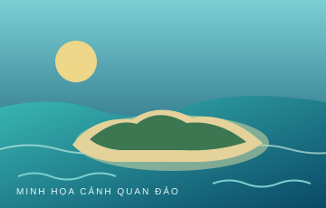

Vị trí
Quần đảo Trường Sa, Việt Nam
Hồ sơ điểm đến
Các số liệu có ghi chú tham khảo cần được kiểm chứng với nguồn tư liệu chính thức trước khi sử dụng trong ấn phẩm học thuật.

Hình minh họa cảnh quan đảo, không phải ảnh thực địa. Có thể thay bằng ảnh tư liệu đã xác minh.
Tự nhiên & đời sống
Tư liệu đa phương tiện
videos/ và cập nhật dữ liệu trong js/site.js.Thời gian & thống kê